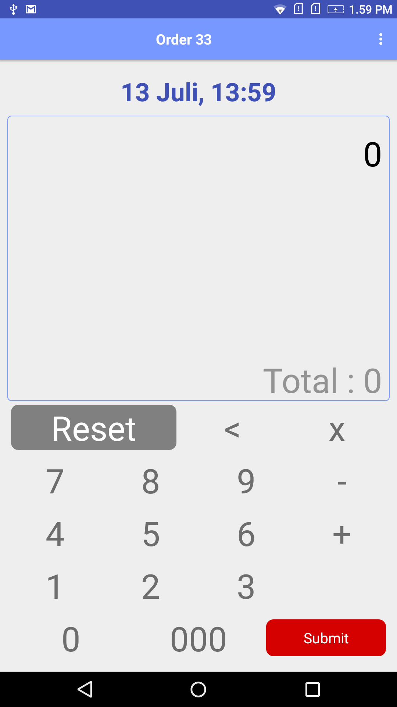
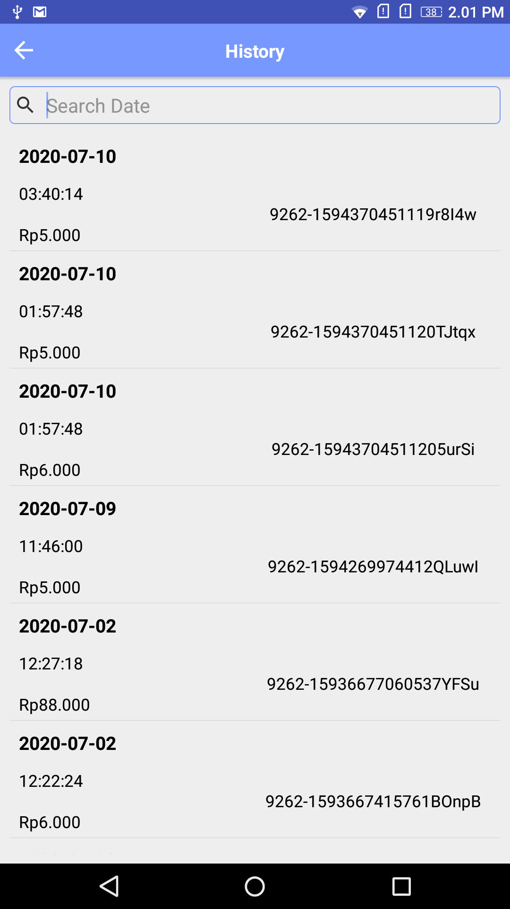

This project changed my career. As a Project Manager, I was managing timelines and resources. But when the existing POS kept failing at small restaurants, I stopped managing the project and started owning the product — questioning what we're building, not just when. That shift made me a Product Manager.
THE CONTEXT
The stakeholder
Bapenda — the local tax revenue office. They needed visibility into small restaurant transactions to track tax compliance. But they had zero data because most small restaurants (warung, rumah makan) didn't use any digital system.
My role (and the pivot)
I started as a Project Manager — coordinating timelines, managing the dev team, making sure things shipped on time. But when I saw the POS kept failing, I didn't just escalate the problem — I went to the restaurants, talked to the cashiers, and came back with a completely different product idea. That was the moment I became a Product Manager. I owned the product from user research to release, working with 1 mobile developer to ship a working Android app.
The career shift: Project Management asks "how do we deliver this on time?" Product Management asks "should we even build this?" KOZ was the first time I asked the second question — and it changed everything.
THE PROBLEM
We tried giving restaurants a standard POS before. It failed. Here's why:
Cashiers have high school diploma
Most cashiers are young, with basic education. A POS with many menus, categories, and settings confused them. Training took time they didn't have.
High turnover = retraining forever
Cashiers change every few months. Every new person needed new training. The restaurant owner got tired of it and just stopped using the POS.
Internet = extra cost
The POS needed internet to sync. For small warung owners, internet is an added cost they don't want to pay. So they just turned the machine off.
The real insight: The problem wasn't the cashier or the restaurant. The problem was the product. It was built for modern retail, not for a warung with 5 menu items and Rp 5.000 nasi goreng.
THE KEY DECISION
Instead of simplifying a POS, I flipped the question: what do all cashiers already know how to use? A calculator. Everyone — from a high school student to a 50-year-old warung owner — can use a calculator. So I proposed: let's make the app look and work like one.
Option A: Simplify existing POS
Remove features, reduce menus, make it "simpler."
Why not: Even a "simple" POS still has product catalog, categories, discounts, settings. The mental model is still foreign to the cashier. Training still needed.
Option B: Calculator-style app
Just numbers. Type the amount, hit submit. That's it.
Why this: Zero training needed. Every cashier already knows the interface. No product catalog to maintain. No internet required for basic use. Bapenda gets the transaction data they need.
The trade-off I accepted
We lose itemized data (no "2x nasi goreng, 1x es teh"). We only get the total transaction amount. But for Bapenda's purpose — tracking revenue per restaurant — that's enough. Getting 80% of the data from 100% of restaurants is better than getting 100% of data from 10% of restaurants that actually use a full POS.
HOW IT WORKS


For the cashier
Customer pays Rp 25.000? Type 25000, hit Submit. Done. No menu to scroll, no category to pick. New cashier? Hand them the phone, they figure it out in 10 seconds.
For Bapenda
Every transaction syncs to a dashboard. They can see daily revenue per restaurant, spot trends, and flag businesses that might be underreporting. All without visiting the restaurant.
EDGE CASES I HANDLED
What if the cashier types the wrong amount?
The history screen shows all transactions. The owner or cashier can review at end of day. We kept it simple — no edit, no delete — to prevent data manipulation (which Bapenda cares about).
What if there's no internet?
Transactions save locally first, then sync when connection is available. The cashier never notices — the app works the same offline or online.
What if the owner doesn't want to use it?
This was a Bapenda mandate, so there was some push. But the fact that it's "just a calculator" lowered resistance. Owners didn't feel like they were learning a new system — they were just recording sales like they already do on paper, but digitally.
What about restaurants that want a full POS?
They can still use their own POS. Zeepos is for the ones that don't have anything. It fills the gap, not replaces existing systems.
WHAT I LEARNED
Don't simplify — reframe. Making a POS simpler still means a POS. Changing the mental model to "calculator" removed the learning curve entirely.
80% data from everyone > 100% data from few. Accepting imperfect data was the right trade-off. Coverage mattered more than granularity for Bapenda.
Context is everything. A product built for Jakarta's cafe culture won't work in a roadside warung. You have to meet users where they are.
Constraints force creativity. No internet, low education, high turnover — these weren't blockers, they were the brief.